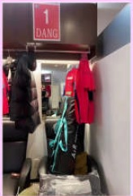

Văn Lâm khoe tủ đồ riêng ở CLB Cerezo Osaka

Tủ đồ của Văn Lâm tại phòng thay đồ của Cerezo Osaka.
Thủ môn Văn Lâm được CLB Cerezo Osaka đăng ký thi đấu tại J-League 1 mùa giải 2021 dù chưa sang Nhật Bản ký hợp đồng. Hôm qua 22/2, Đặng Văn Lâm khoe trên Instagram hình ảnh tủ đồ riêng của anh tại phòng thay đồ của CLB Cerezo Osaka. Thủ thành tuyển Việt Nam đã được đội bóng Nhật Bản đăng ký thi đấu tại J-League 1 mùa giải 2021. Đặc biệt, anh được trao áo số 1 - số áo thường dành cho các thủ môn bắt chính ở các đội bóng. Văn Lâm đạt được thoả thuận gia nhập Cerezo Osaka hồi cuối tháng 1 vừa qua nhưng do ảnh hưởng của Covid-19 anh vẫn mắc kẹt tại Thái Lan. Thủ thành 27 tuổi hiện cùng bạn gái Yến Xuân nghỉ dưỡng ở một một resort gần biển. Anh vẫn tự tập luyện hàng ngày để duy trì thể lực.